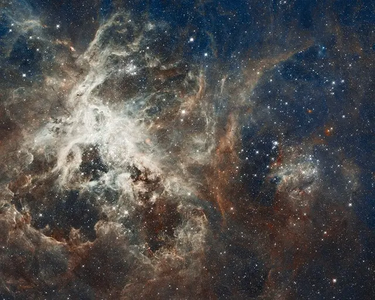
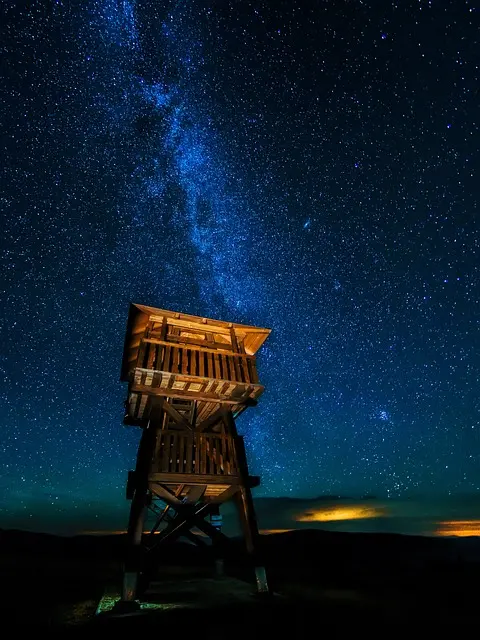
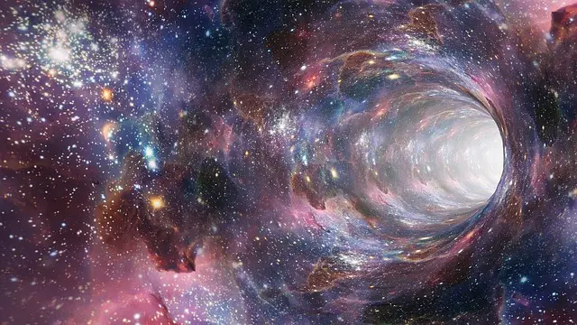
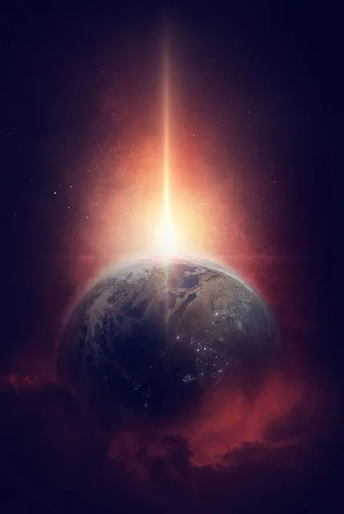

Mars 2030
Najnowsze wieści
Europejska Agencja Kosmiczna (ESA) i Roscosmos
Temperatura na Marsie waha się od +55 stopni Celsjusza w lecie do nawet -130 stopni zimą. Zachodzące Słońce ma tutaj kolor niebieski. Mars był kiedyś bardzo podobny do Ziemi. Można tam znaleźć tereny górzyste, równiny, doliny, a także kaniony. Metan jest szczególnie interesujący dla naukowców, ponieważ na Ziemi jest produkowany głównie przez żywe organizmy, co sugeruje możliwość istnienia życia na Czerwonej Planecie.

Największa supernova
Zaobserwowana dotychczas
Astronomowie odkryli najjaśniejszą supernową do tej pory zaobserwowaną.
“ Astronomowie odkryli najjaśniejszą supernową do tej pory zaobserwowaną. Wybuch, który miał miejsce w odległej galaktyce, był tak jasny, że na krótko przewyższył blask całej jego macierzystej galaktyki. ”

Kosmiczne hotelarstwo
!!!!!!!!!!!!
Prywatna firma kosmiczna ogłosiła plany otwarcia pierwszego hotelu na orbicie okołoziemskiej.
“ Prywatna firma kosmiczna ogłosiła plany otwarcia pierwszego hotelu na orbicie okołoziemskiej. Obiekt, który ma być gotowy do 2030 roku, będzie mógł pomieścić do 100 gości, oferując im niewiarygodne widoki na Ziemię. ”
Pozaziemskie życie na Europie?
“ Naukowcy z NASA ogłosili odkrycie potencjalnych dowodów na istnienie życia na Europie, jednym z księżyców Jowisza. Znaleziono ślady chemiczne sugerujące obecność mikroorganizmów w oceanach pod lodową powierzchnią tego księżyca. ”

Ciemna materia
Co o niej wiemy?
Ciemna materia odkryta?
Grupa naukowców z CERN ogłosiła, że mogła właśnie dokonać pierwszego bezpośredniego wykrycia cząstek ciemnej materii. Jeśli to prawda, byłby to jeden z najważniejszych przełomów w fizyce ostatnich lat. Grupa naukowców z CERN ogłosiła, że mogła właśnie dokonać pierwszego bezpośredniego wykrycia cząstek ciemnej materii. Jeśli to prawda, byłby to jeden z najważniejszych przełomów w fizyce ostatnich lat. Grupa naukowców z CERN ogłosiła, że mogła właśnie dokonać pierwszego bezpośredniego wykrycia cząstek ciemnej materii. Jeśli to prawda, byłby to jeden z najważniejszych przełomów w fizyce ostatnich lat. Grupa naukowców z CERN ogłosiła, że mogła właśnie dokonać pierwszego bezpośredniego wykrycia cząstek ciemnej materii. Jeśli to prawda, byłby to jeden z najważniejszych przełomów w fizyce ostatnich lat. Grupa naukowców z CERN ogłosiła, że mogła właśnie dokonać pierwszego bezpośredniego wykrycia cząstek ciemnej materii. Jeśli to prawda, byłby to jeden z najważniejszych przełomów w fizyce ostatnich lat.